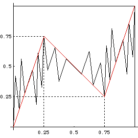

| 5. (a) Because the generator has three segents, the number of segments in each iteration is a power of 3. |
| For example, the second iteration consists of 32 segments and the third iteration consists of 33 = 27 segments. |
| We count 27 segments, so this picture is of the third iteration. |
| (b) The turning points are the endpoints of the 9th and 18th
segments. Thus they are |
|  |
| (c) The coarse Hölder exponents are |
| Log(.75)/Log(.25) ≈ 0.2075 , Log(.5)/Log(.5) = 1, and Log(.75)/Log(.25) |
| Not all these are equal, so this generator is multifractal. |
Return to Homework 7 Practice.